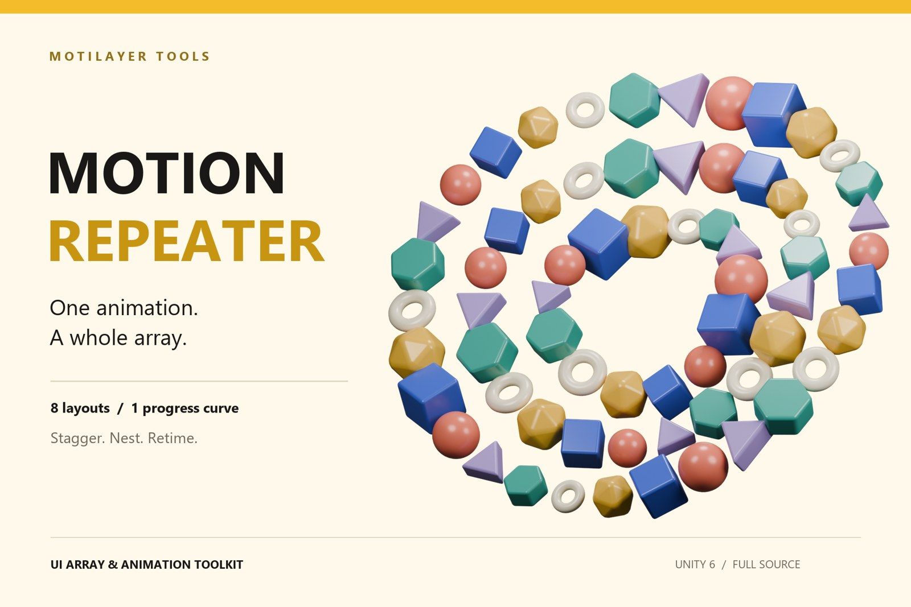
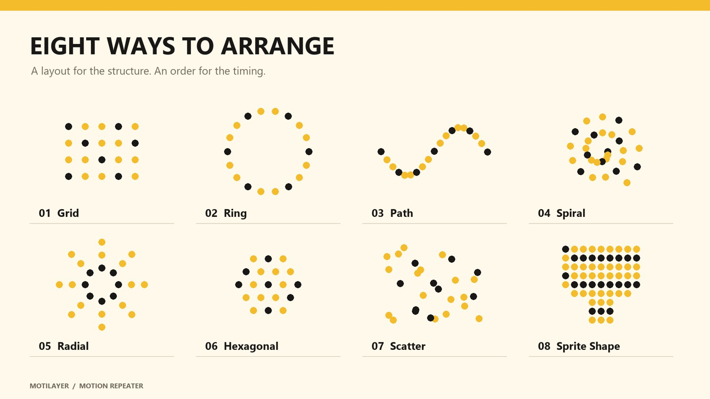
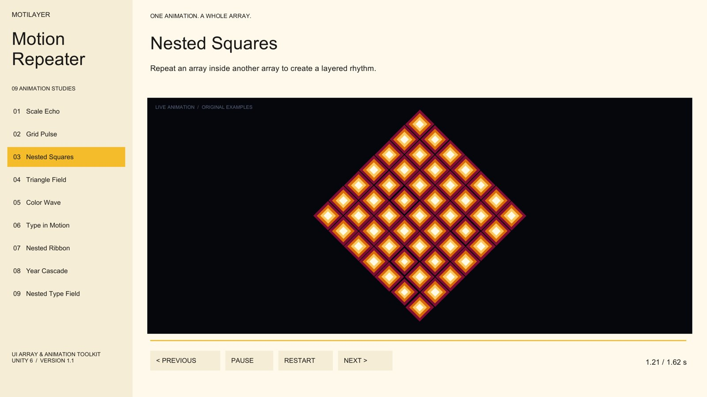

01 / ARRANGE
Start with a source.
Choose an object, Animation Clip and time range. Preview your layout and adjust spacing, order, stagger and source time scale.
MOTION REPEATER · UNITY UI
Place the copies, set their stagger and retime the finished group with one Progress curve. Build the rhythm in Unity, without managing the same motion on every copy.
View on Unity Asset StoreRead the guide

08 LAYOUTS
Rows, circles, paths, spirals, rays, hexagonal rings, seeded scatter or a shape sampled from a sprite. Each layout has its own placement and ordering controls.

01 / ARRANGE
Choose an object, Animation Clip and time range. Preview your layout and adjust spacing, order, stagger and source time scale.
02 / GENERATE
The generated group stores its source motion. A Time Controller exposes Progress from 0 to 1 for the whole composition.
03 / RETIME
Move the Progress keys, change their easing, hold a value or reverse the curve. Use the array as a source to build another layer.
NESTED COMPOSITIONS
Combine an inner array's motion with an outer array's stagger. Each copy retains its nested timing, while the outer Progress curve controls the result.
Ordinary GameObjects remain in the hierarchy, ready for the rest of your UI.

NINE EXAMPLES · ONE SCENE
Scale Echo, Grid Pulse, Nested Squares, Triangle Field, Color Wave, Type in Motion, Nested Ribbon, Year Cascade and Nested Type Field.
Linear and Bezier interpolation, Scene-view handles, linked tangents, facing offsets and travel along the path. Wrap at the ends or continue along their direction.
Use alpha or luminance as a mask. Map brightness to scale or opacity. A sprite sheet becomes a sequence controlled by its own progress value.
Undo, native Unity Presets and header Reset. Choose exact Image or transform targets before generating. Full C# source and an English guide are included.
Unity 6 and Unity UI. The release project uses Unity 6000.0.26f1 on Windows with the Built-in Render Pipeline. The supplied UI shader is for Built-in. Other pipelines and platforms are not verified for this release.
No. The progress curve simplifies animation authoring. Copies remain GameObjects, and the Time Controller samples their source motion. Element count, nested hierarchy depth and animation complexity still affect runtime cost.
The scene migration command backs up the scene and clips, moves existing curves into composition clips and replaces them with Progress curves. Hand-edited motion is retained internally; it is not automatically reduced to a single shared source.
Element counts, path-point counts, selected targets and sprite sampling data. Regenerate the array to change them. Continuous layout parameters and Progress can be animated on the generated components.
Humanoid animation, root motion, Animation Events, additive Animator-layer blending and independent inner Animators writing the same properties as a Time Controller. This is a uGUI tool, not a 3D cloner, GPU instancer or UI Toolkit system.
Full source, eight presets, nine examples and the guide are included.
Open the store pageRead the guide